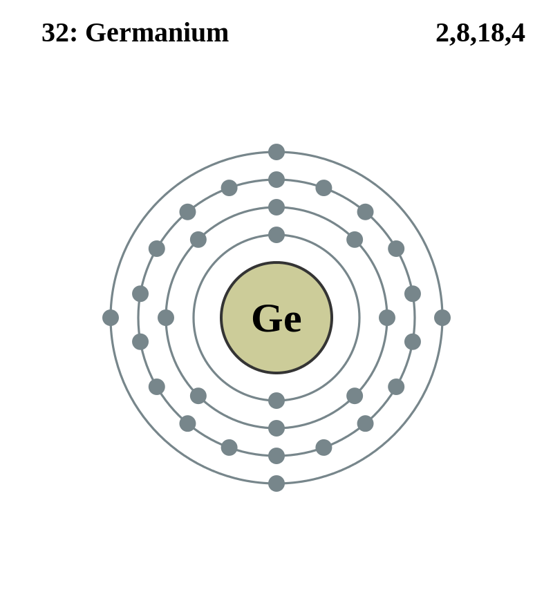

Basic Information about the element
Basic Information about the element
Name: Manganese
Symbol: Mn
Atomic Number: 25

1s2 2s2 2p6 3s2 3p6 3d7
The chemical element Manganese is classed as a Transition metal
It was discovered in 1774 by Johann Gahn.
| Number of Protons/Electrons: | 25 |
| Number of Neutrons: | 30 |
| Atomic Mass: | 54.93805 amu |
| Melting Point: | 1245.0 °C (1518.15 K, 2273.0 °F) |
| Boiling Point: | 1962.0 °C (2235.15 K, 3563.6 °F) |
| Classification: | Transition metal |
| Uses: | Used as steel, batteries, ceramics. |